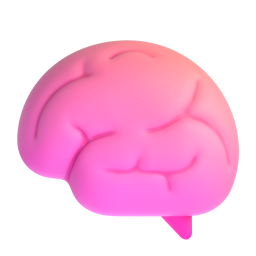

Nó chạy thế nào
Bốn bước, lặp mãi
01

Agent nói chuyệnMọi lượt trao đổi đều được ghi lại
02

Rút ra điều đáng nhớBỏ phần thừa, giữ phần dùng lại được
03

Lần sau tự truy hồiĐúng ngữ cảnh cần, không nạp cả kho
04
Tự dọn định kỳCàng chạy lâu càng gọn, không phình